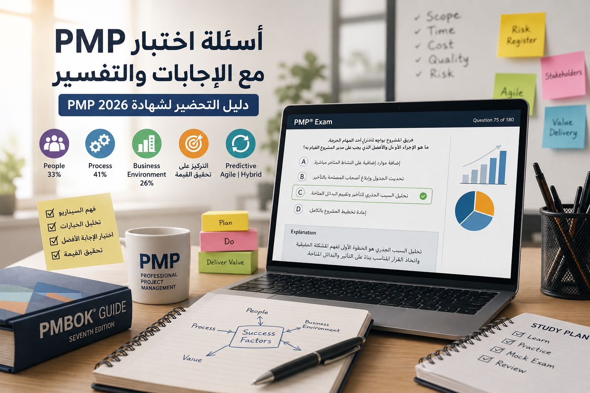

أهم أسئلة اختبار PMP مع الإجابات والتفسير | دليل التحضير لشهادة PMP 2026

إذا كنت تستعد للحصول على شهادة PMP، فواحد من أكبر الأخطاء التي يمكن أن تقع فيها هو التعامل مع الاختبار على أنه مجموعة تعريفات ومصطلحات يجب حفظها.
اختبار Project Management Professional – PMP يركز بدرجة كبيرة على قدرتك على التفكير كمدير مشروع واتخاذ القرار المناسب في موقف عملي:
مشكلة داخل الفريق، تغيير في نطاق المشروع، خطر جديد، تأخير في الجدول، خلاف بين أصحاب المصلحة، أو قرار يجب اتخاذه بين Predictive وAgile وHybrid.
لذلك جمعنا في هذا الدليل مجموعة من أهم أسئلة اختبار PMP مع الإجابات والتفسير، إلى جانب طريقة التفكير الصحيحة في الأسئلة الموقفية، وأهم الموضوعات التي يجب مذاكرتها وفق تحديث اختبار PMP لعام 2026.
ملاحظة: الأسئلة الموجودة في هذا الدليل أسئلة تدريبية أعدت للمساعدة على فهم أسلوب التفكير والمفاهيم المطلوبة في PMP، وليست أسئلة فعلية أو مسربة من اختبار PMI.
إذا كنت تريد الاستعداد من خلال برنامج تدريبي منظم، يمكنك الانتقال إلى [[رابط داخلي: دورة PMP في معهد مسارتك]] والتعرف على برنامج التحضير المتاح بالرياض وأونلاين.
PMP – Project Management Professional هي شهادة مهنية في إدارة المشاريع يقدمها Project Management Institute – PMI.
وتركز على قدرة مدير المشروع على قيادة المشروع في بيئات وأساليب عمل مختلفة، بما فيها:
Predictive.
Agile.
Hybrid.
ولا ترتبط PMP بصناعة واحدة فقط.
فالمفاهيم والممارسات المرتبطة بإدارة المشاريع تستخدم في قطاعات مثل:
تقنية المعلومات.
الإنشاءات والهندسة.
الطاقة.
الخدمات.
البنوك.
الاتصالات.
الجهات الحكومية.
التحول الرقمي.
الصحة.
الاستشارات.
المشاريع الصناعية.
ولهذا تعد PMP من الشهادات المهمة لمن يريد بناء مسار مهني أكثر احترافية في إدارة المشاريع داخل السعودية أو خارجها.
تم تحديث اختبار PMP في يوليو 2026 ليعكس بصورة أكبر طبيعة المشاريع الحديثة والقرارات التي يواجهها مدير المشروع.
ويتكون الاختبار حاليًا من:
| العنصر | التفاصيل |
|---|---|
| عدد الأسئلة | 180 سؤالًا |
| مدة الاختبار | 240 دقيقة |
| فترات الراحة | فترتان، كل منهما 10 دقائق |
| People | 33% |
| Process | 41% |
| Business Environment | 26% |
كما يغطي الاختبار طرق إدارة المشاريع المختلفة.
تقريبًا:
40% Predictive
60% موزعة بين Agile وHybrid
وهذه نقطة شديدة الأهمية.
إذا وجدت على الإنترنت مصادر تقول إن توزيع المجالات هو:
People 42% – Process 50% – Business Environment 8%
فأنت غالبًا تقرأ محتوى يعتمد على النسخة السابقة من الاختبار.
الاختبار الجديد أصبح أكثر تركيزًا على:
تحقيق القيمة Business Value.
النتائج وليس تنفيذ الإجراءات فقط.
إشراك أصحاب المصلحة.
القيادة.
اتخاذ القرار.
الاستدامة.
استخدام الذكاء الاصطناعي في سياق إدارة المشاريع.
البيئات المعقدة.
Agile وHybrid.
ربط المشروع بأهداف المؤسسة.
بمعنى آخر:
PMI لا يريد فقط مدير مشروع يعرف الأدوات؛ بل مدير مشروع يعرف متى يستخدمها ولماذا.
السؤال 1: يوجد خلاف بين عضوين في فريق المشروع، ماذا يجب أن يفعل مدير المشروع أولًا؟
أ) رفع المشكلة مباشرة إلى الإدارة العليا.
ب) استبدال أحد أعضاء الفريق.
ج) فهم سبب الخلاف ومناقشته مع الأطراف المعنية.
د) تجاهل الخلاف طالما لم يؤثر في الجدول بعد.
الإجابة الأنسب: ج).
لماذا؟
وجود Conflict داخل الفريق لا يعني أن أول خطوة هي التصعيد.
يحتاج مدير المشروع أولًا إلى:
فهم المشكلة.
الاستماع للأطراف.
تحديد السبب الحقيقي.
محاولة الوصول إلى حل مناسب.
قاعدة مهمة في أسئلة PMP:
لا تصعّد المشكلة قبل محاولة فهمها ومعالجتها في المستوى المناسب.
أ) استبعاده من المشروع.
ب) إبلاغ الإدارة بأنه غير مناسب.
ج) معرفة سبب ضعف الأداء وتحديد ما إذا كان يحتاج إلى دعم أو تدريب.
د) إعطاء المهام إلى عضو آخر.
الإجابة الأنسب: ج).
طريقة التفكير
قد يكون ضعف الأداء ناتجًا عن:
نقص الخبرة.
عدم وضوح المسؤولية.
مشكلة في التواصل.
نقص الموارد.
ضغط العمل.
حاجة إلى تدريب.
مدير المشروع الجيد لا يقفز مباشرة إلى العقوبة.
افهم السبب قبل اتخاذ الإجراء.
أ) تعطيه المهام الأصعب حتى يتعلم بسرعة.
ب) توفر له التوجيه والتدريب اللازمين.
ج) تطلب من الإدارة استبداله.
د) تمنعه من المشاركة في الاجتماعات.
الإجابة الأنسب: ب).
من أدوار القيادة داخل المشروع:
Coaching.
Mentoring.
تطوير الفريق.
إزالة العوائق.
تمكين أعضاء الفريق.
خصوصًا في البيئات الرشيقة، لا يعمل مدير المشروع بمنطق Command and Control فقط.
الاختبار لا يبحث عادة عن مدير يتحكم في كل تفصيلة.
بل يميل التفكير الاحترافي إلى:
تمكين الفريق.
بناء الثقة.
تحسين التواصل.
إزالة العوائق.
تشجيع التعاون.
حل النزاعات.
خلق بيئة تسمح للفريق بالنجاح.
ومن هنا يأتي مفهوم:
Servant Leadership
خصوصًا داخل Agile.
السؤال 5: أحد أصحاب المصلحة المهمين غير راضٍ عن المشروع، ماذا تفعل؟
أ) تجاهله لأن المشروع يسير حسب الخطة.
ب) إرسال تقرير المشروع له.
ج) فهم سبب عدم رضاه وتقييم احتياجاته وتوقعاته.
د) رفع الأمر مباشرة إلى الراعي Sponsor.
الإجابة الأنسب: ج).
لماذا؟
Stakeholder Engagement لا يعني إرسال التقارير فقط.
يجب فهم:
ما الذي يتوقعه؟
ما مستوى تأثيره؟
ما اهتمامه بالمشروع؟
ماذا يحتاج من معلومات؟
كيف يمكن إشراكه بصورة مناسبة؟
السؤال 6: صاحب مصلحة يطلب إضافة كبيرة إلى المشروع، ماذا تفعل؟
أ) تنفذها فورًا لأنه صاحب مصلحة مهم.
ب) ترفضها لأنها ليست ضمن الخطة.
ج) تقيّم أثر التغيير وتتبع عملية إدارة التغيير المناسبة.
د) تطلب من الفريق تنفيذها بدون تسجيل رسمي.
الإجابة الأنسب: ج).
القاعدة
لا تقل تلقائيًا:
نعم.
ولا تقل تلقائيًا:
لا.
اسأل أولًا:
ما تأثير التغيير على النطاق والوقت والتكلفة والمخاطر والقيمة؟
ثم اتبع آلية اتخاذ القرار المناسبة لطبيعة المشروع.
السؤال 7: ما هو Scope Creep؟
Scope Creep يعني التوسع التدريجي في نطاق المشروع دون إدارة مناسبة لهذا التغيير.
مثال:
بدأ المشروع بخمس وظائف أساسية للنظام.
ثم بدأ العميل في طلب:
ميزة إضافية.
تقرير جديد.
تكامل جديد.
تعديل آخر.
وكلها يتم تنفيذها دون تقييم رسمي للأثر.
النتيجة قد تكون:
تأخير.
ارتفاع التكلفة.
إرهاق الفريق.
زيادة المخاطر.
السؤال 8: كيف تمنع Scope Creep؟
ليس بمنع التغيير.
التغيير طبيعي في المشاريع.
المطلوب هو إدارة التغيير.
ويشمل ذلك:
فهم الطلب.
تقييم التأثير.
تحديد البدائل.
اتباع عملية الموافقة المناسبة.
تحديث الخطط عند اعتماد التغيير.
التواصل مع أصحاب المصلحة.
السؤال 9: ظهر خطر جديد أثناء تنفيذ المشروع، ماذا تفعل؟
أ) تنتظر حتى يحدث.
ب) تضيفه إلى Risk Register وتقوم بتحليله.
ج) توقف المشروع.
د) تبلغ العميل أن المشروع سيفشل.
الإجابة الأنسب: ب).
لماذا؟
إدارة المخاطر ليست نشاطًا يتم مرة واحدة في بداية المشروع.
المخاطر يمكن أن تظهر وتتغير طوال دورة حياة المشروع.
لذلك يجب:
Identify Analyze Plan Response Monitor
السؤال 10: ما الفرق بين Risk وIssue؟
من أكثر أسئلة PMP أهمية.
Risk
حدث غير مؤكد قد يحدث مستقبلًا ويؤثر في المشروع.
Issue
مشكلة حدثت بالفعل وتحتاج إلى التعامل معها.
مثال:
هناك احتمال أن يتأخر المورد أسبوعين.
هذا:
Risk
أما:
المورد تأخر بالفعل أسبوعين.
فهذه:
Issue
السؤال 11: هل كل Risk شيء سلبي؟
لا.
المخاطر قد تكون:
Threat
تهديد يمكن أن يؤثر سلبًا في المشروع.
Opportunity
فرصة يمكن أن تؤثر إيجابيًا في المشروع.
مدير المشروع لا يبحث فقط عن كيفية منع المشكلات.
بل يبحث أيضًا عن الفرص التي يمكن أن تحقق قيمة إضافية.
إذا كان مجال المخاطر مهمًا في مسارك المهني، يمكن الانتقال بعد PMP إلى [[رابط داخلي: دورة PMI-RMP لإدارة مخاطر المشاريع]] للتخصص بصورة أعمق.
السؤال 12: هل اختبار PMP يعتمد فقط على PMBOK وWaterfall؟
لا.
وهذا تصور قديم وخاطئ.
اختبار PMP الحديث يغطي بيئات:
Predictive.
Agile.
Hybrid.
ولهذا فإن حفظ عمليات إدارة المشاريع التقليدية وحده لا يكفي.
السؤال 13: ما الفرق بين Predictive وAgile؟
Predictive
يكون نطاق المشروع والخطة أكثر وضوحًا منذ البداية، ويتم تنفيذ المشروع وفق تخطيط أكثر تفصيلًا مسبقًا.
يناسب عادة البيئات التي تكون فيها المتطلبات أكثر استقرارًا.
Agile
يعتمد على:
Iterations.
التغذية الراجعة المستمرة.
التطوير التدريجي.
المرونة مع المتطلبات.
التعاون المستمر.
Hybrid
يجمع بين عناصر Predictive وAgile وفق طبيعة المشروع.
وهنا تظهر فكرة مهمة جدًا:
لا توجد منهجية واحدة هي الأفضل لكل المشاريع.
المدير المحترف يختار النهج الذي يناسب البيئة والمشروع.
في البيئة الرشيقة يكون التغيير متوقعًا بدرجة أكبر.
يتم عادة تقييم الأولوية والقيمة ومناقشة التغيير مع الأشخاص المسؤولين عن إدارة الأولويات مثل Product Owner حسب الإطار المستخدم.
الفكرة الأساسية:
لا تعامل Agile بنفس منطق تغيير Baseline في مشروع Predictive.
السياق مهم.
لا يكون الحل الأول هو الضغط على الفريق لزيادة ساعات العمل.
راجع:
هل الالتزام واقعي؟
هل يوجد عائق مستمر؟
هل المتطلبات واضحة؟
هل حجم العمل يتم تقديره بصورة مناسبة؟
هل توجد Dependencies؟
ماذا تعلم الفريق من Retrospective؟
ثم اعمل على معالجة Root Cause.
السؤال 16: المشروع متأخر عن الجدول، ما أول شيء تفعله؟
لا تقفز مباشرة إلى:
إضافة موظفين.
ابدأ أولًا بتحليل:
سبب التأخير.
Critical Path.
الأنشطة المتأثرة.
Dependencies.
الموارد.
المخاطر.
تأثير التأخير على النتائج.
بعد التشخيص يمكن تقييم الحلول المناسبة.
هو أطول مسار للأنشطة المرتبطة داخل جدول المشروع والذي يؤثر في مدة المشروع.
التأخير في نشاط موجود على Critical Path يمكن أن يؤدي إلى تأخير موعد انتهاء المشروع إذا لم يكن هناك Float متاح أو إجراء آخر يعوض التأخير.
وفهم Critical Path مهم جدًا في التخطيط والجدولة.
لمن يريد التعمق في التطبيق العملي للجداول، يمكن دمج المعرفة الإدارية مع [[رابط داخلي: دورة Microsoft Project في معهد مسارتك]].
من المفاهيم المرتبطة بـEarned Value Management.
CPI – Cost Performance Index
يساعد على تقييم كفاءة التكلفة.
SPI – Schedule Performance Index
يساعد على تقييم أداء الجدول.
بصورة مبسطة:
إذا كان المؤشر أقل من 1، فهذا غالبًا يشير إلى أداء أقل من المطلوب في الجانب الذي يقيسه المؤشر.
لكن لا تجعل استعدادك لـPMP مجرد حفظ معادلات.
افهم:
ماذا يعني الرقم بالنسبة للمشروع؟ وما القرار الذي يجب اتخاذه؟
السؤال 19: حدث سوء فهم بين الفريق وأحد أصحاب المصلحة، ماذا تفعل؟
لا تبدأ بالبحث عن المخطئ.
راجع أولًا:
Communication Plan.
القناة المستخدمة.
وضوح الرسالة.
احتياجات الطرف الآخر.
Frequency.
Feedback.
هل وصلت المعلومة المناسبة للشخص المناسب في الوقت المناسب؟
التواصل ليس:
إرسال رسالة.
بل:
التأكد من حدوث فهم مشترك.
لا.
قد يحتاج الراعي Sponsor إلى:
تقدم المشروع.
المخاطر الرئيسية.
الميزانية.
القرارات المطلوبة.
بينما يحتاج فريق التنفيذ إلى:
المهام.
الأولويات.
Dependencies.
المشكلات اليومية.
التواصل الجيد يجب أن يناسب احتياجات المتلقي.
السؤال 21: اكتشف الفريق عيبًا متكررًا في مخرجات المشروع، ما الأفضل؟
أ) إصلاح كل عيب بعد ظهوره فقط.
ب) تحليل السبب الجذري للمشكلة.
ج) زيادة عدد الأشخاص.
د) تجاهله إذا كان العميل لم يشتكِ.
الإجابة الأنسب: ب).
لماذا؟
إذا كانت المشكلة تتكرر، فإصلاح النتيجة في كل مرة لا يكفي.
استخدم:
Root Cause Analysis
وحاول منع تكرار السبب.
وهنا يظهر الفرق بين:
تصحيح المشكلة
و
تحسين العملية التي أنتجت المشكلة.
السؤال 22: لماذا أصبح Business Environment أكثر أهمية في PMP 2026؟
لأن نجاح المشروع لا يقاس فقط بإكمال:
Scope.
Schedule.
Budget.
المشروع يجب أن يقدم قيمة حقيقية للمؤسسة.
ولهذا يحتاج مدير المشروع إلى فهم:
استراتيجية المؤسسة.
Business Value.
التغيرات الخارجية.
الحوكمة.
الامتثال.
أثر المشروع.
أصحاب المصلحة.
الاستدامة.
السؤال 23: المشروع يسير حسب الجدول والميزانية لكنه لم يعد يقدم قيمة للمؤسسة، هل يعتبر ناجحًا؟
ليس بالضرورة.
المشروع يمكن أن يكون منضبطًا تشغيليًا، لكنه يفشل في تحقيق الهدف التجاري الذي تم إنشاؤه من أجله.
وهذه إحدى الرسائل المهمة في إدارة المشاريع الحديثة:
لا تدير الخطة فقط؛ أدر القيمة التي يفترض أن تحققها الخطة.
من التغييرات المهمة في التحديث الجديد زيادة حضور Artificial Intelligence ضمن سيناريوهات إدارة المشاريع.
لكن هذا لا يعني أن PMP تحول إلى اختبار برمجة أو اختبار AI.
الفكرة تتعلق بكيفية استخدام الأدوات الحديثة بصورة مسؤولة في:
التخطيط.
تحليل البيانات.
التنبؤ.
اتخاذ القرار.
إعداد التقارير.
إدارة المعرفة.
تحسين الإنتاجية.
مع مراعاة:
جودة البيانات.
التحقق من النتائج.
السرية.
الأخلاقيات.
الحكم البشري.
الاستدامة أصبحت أيضًا أكثر حضورًا في سياق إدارة المشاريع الحديثة.
مدير المشروع قد يحتاج إلى التفكير في أثر القرارات على:
البيئة.
المجتمع.
المؤسسة.
القيمة طويلة الأجل.
أصحاب المصلحة.
الفكرة ليست حفظ تعريف Sustainability.
بل فهم:
كيف يمكن لقرار المشروع أن يؤثر خارج حدود الوقت والتكلفة والنطاق؟
هذا القسم من أهم أجزاء الدليل.
عندما يظهر أمامك سيناريو طويل، لا تبدأ بالإجابات.
اتبع هذه الخطوات.
1. حدد نوع البيئة
اسأل:
هل المشروع:
Predictive؟
Agile؟
Hybrid؟
لأن الإجابة قد تختلف جذريًا حسب البيئة.
2. حدد المشكلة الحقيقية
قد يحتوي السؤال على تفاصيل كثيرة.
ابحث عن:
ما المشكلة التي يجب حلها الآن؟
3. لاحظ الكلمات المهمة
مثل:
First.
Next.
Best.
Should have done.
Most likely.
Prevent.
الفرق بين:
ماذا تفعل أولًا؟
و
ماذا تفعل لحل المشكلة؟
قد يغير الإجابة بالكامل.
4. لا تقفز إلى التصعيد
في كثير من الأسئلة تكون خيارات مثل:
Escalate.
Replace.
Fire.
Report to senior management.
ليست أول خطوة.
حاول معالجة المشكلة في المستوى المناسب أولًا، إلا إذا كان السياق يستدعي تصعيدًا فعليًا.
5. ابحث عن السبب قبل الحل
إذا لم تعرف سبب المشكلة:
Investigate / Analyze / Discuss
غالبًا تأتي قبل تنفيذ حل كبير.
6. فكر في الفريق
PMI يهتم كثيرًا بالقيادة وتمكين الفريق.
ابتعد عن عقلية:
مدير المشروع يأمر والجميع ينفذ.
وفكر أكثر في:
Facilitation.
Coaching.
Collaboration.
Empowerment.
7. فكر في أصحاب المصلحة
اسأل:
من يتأثر بهذا القرار؟
وهل تم:
التواصل معه؟
فهم احتياجاته؟
إشراكه؟
إدارة توقعاته؟
8. اختر الإجراء الذي يعالج السبب
الحلول قصيرة المدى قد تحل العرض ولا تحل المشكلة.
اختبار PMP يحب التفكير المنظم.
اجعل خطتك تغطي على الأقل:
People
Leadership.
Conflict Management.
Team Development.
Emotional Intelligence.
Communication.
Stakeholder Engagement.
Negotiation.
Coaching.
Mentoring.
Process
Scope.
Schedule.
Cost.
Quality.
Resources.
Communications.
Risks.
Procurement.
Change.
Governance.
Delivery.
Business Environment
Business Value.
Strategy.
Compliance.
External Environment.
Organizational Change.
Sustainability.
Agile & Hybrid
Scrum.
Kanban.
Iterative Delivery.
Incremental Delivery.
Product Backlog.
Sprint.
Retrospective.
Servant Leadership.
Prioritization.
Adaptive Planning.
لا.
قراءة PMBOK مفيدة، لكن اختبار PMP ليس اختبار حفظ كتاب.
المتقدم يحتاج إلى:
فهم المبادئ.
معرفة طريقة تطبيقها.
التدريب على الأسئلة الموقفية.
فهم Predictive.
فهم Agile.
فهم Hybrid.
تحليل أخطائه في الاختبارات التجريبية.
الهدف:
أن تعرف لماذا هذه الإجابة أفضل في هذا السيناريو.
وليس:
أن تتذكر أنك شاهدت السؤال من قبل.
| الأسبوع | التركيز |
|---|---|
| الأسبوع 1 | فهم هيكل اختبار PMP والمبادئ الأساسية |
| الأسبوع 2 | People والقيادة وإدارة الفريق |
| الأسبوع 3 | Scope وSchedule وCost |
| الأسبوع 4 | Risk وQuality وProcurement وStakeholders |
| الأسبوع 5 | Agile وScrum والممارسات Adaptive |
| الأسبوع 6 | Hybrid + Business Environment |
| الأسبوع 7 | اختبارات تجريبية وتحليل الأخطاء |
| الأسبوع 8 | مراجعة نقاط الضعف ومحاكاة الاختبار |
لكن لا تجعل الخطة مبنية على الوقت فقط.
في نهاية كل أسبوع اسأل:
هل أصبحت أفضل في تحليل السيناريو واتخاذ القرار؟
قبل اختيار الإجابة:
اقرأ آخر سطر في السؤال أولًا.
حدد المطلوب.
حدد نوع المشروع.
حدد المرحلة الحالية.
استخرج المشكلة الأساسية.
حدد ما إذا كانت المعلومات كافية.
استبعد الخيارات المتطرفة.
لا تصعّد بلا داعٍ.
لا تنفذ تغييرًا بلا تقييم.
ابحث عن الحل الذي يحقق القيمة ويحافظ على التعاون.
حفظ ITTOs فقط
فهم Inputs وTools وOutputs قد يكون مفيدًا، لكن تحويلها إلى عملية حفظ ضخمة ليس أفضل استراتيجية لاختبار PMP الحديث.
الاعتماد على أسئلة مسربة
حتى لو وجدت ما يسمى:
PMP Dumps
فهذا لا يبني قدرتك على التعامل مع سيناريو مختلف.
تعلم طريقة التفكير بدل حفظ شكل السؤال.
تجاهل Agile
خطأ كبير.
Agile وHybrid يمثلان جزءًا أساسيًا من طبيعة الاختبار الحالية.
استخدام مواد قديمة
خصوصًا بعد تحديث يوليو 2026.
راجع تاريخ:
الكورس.
الأسئلة.
Exam Content Outline.
خطة المذاكرة.
التركيز على النتيجة دون تحليل الخطأ
الحصول على 70% في Mock Exam أقل قيمة من معرفة:
لماذا أخطأت في الـ30%؟
صنّف أخطاءك إلى:
Knowledge Gap.
سوء قراءة السؤال.
عدم فهم Agile.
استعجال.
اختيار تصعيد مبكر.
الخلط بين Risk وIssue.
عدم فهم Change Management.
تعتمد متطلبات الخبرة على مؤهلك الأكاديمي.
وفق المسارات الحالية، قد يحتاج المتقدم إلى خبرة في إدارة المشاريع تتراوح بحسب المؤهل، بالإضافة إلى متطلبات التدريب.
ومن المتطلبات المهمة حاليًا:
35 ساعة من التدريب المهني في إدارة المشاريع وفق شروط PMI السارية عند تقديم الطلب.
إذا كنت تستهدف التقديم فعليًا للاختبار، لا تعتمد على مقال أو إعلان تدريبي فقط.
راجع شروط PMI الرسمية وقت التقديم؛ لأن متطلبات الأهلية وجهات التدريب المقبولة يمكن تحديثها.
PMP ليست بالضرورة نقطة البداية الأفضل لمن لا يملك خبرة عملية مناسبة في المشاريع.
إذا كنت في بداية المسار، فقد تكون شهادة CAPM أقرب إلى وضعك.
يمكنك مقارنة ذلك من خلال:
[[رابط داخلي: دورة CAPM في معهد مسارتك]]
أما PMP فتناسب بصورة أكبر من لديه خبرة فعلية في المشاريع ويريد إثبات قدرته على قيادتها وإدارتها باحتراف.
| CAPM | PMP |
|---|---|
| مناسبة أكثر لبداية المسار | موجهة للمحترفين ذوي الخبرة |
| تركز على تأسيس المعرفة | تركز على قيادة وإدارة المشاريع |
| متطلبات خبرة أقل | لها متطلبات خبرة عملية |
| خطوة جيدة للمبتدئ | شهادة احترافية متقدمة |
لا تختار بناءً على أيهما أشهر فقط.
اختر بناءً على:
خبرتك الحالية والوظيفة التي تريد الوصول إليها.
الشهادتان لا تقومان بالدور نفسه.
PMP
تغطي إدارة المشروع بصورة شاملة.
PMI-RMP
تركز بصورة متخصصة على إدارة مخاطر المشاريع.
لذلك قد يكون المسار المنطقي:
PMP خبرة وتطبيق PMI-RMP
إذا كانت المخاطر جزءًا رئيسيًا من طبيعة عملك.
PMP تعلمك كيف تفكر وتدير المشروع.
أما Microsoft Project فهو أداة يمكن استخدامها في:
بناء الجدول.
الأنشطة.
Dependencies.
Milestones.
الموارد.
متابعة التقدم.
لذلك هما مهارتان متكاملتان، وليستا بديلتين لبعضهما.
يمكن لمن يعمل بصورة عملية في التخطيط والجداول الانتقال إلى:
[[رابط داخلي: دورة Microsoft Project]]
تتوسع بيئة المشاريع في السعودية في قطاعات كثيرة، ولذلك تعتبر مهارات إدارة المشاريع ذات قيمة في مجالات متعددة مثل:
المشاريع الحكومية.
التحول الرقمي.
التقنية.
الإنشاءات.
الهندسة.
الطاقة.
الاستشارات.
التشغيل.
الفعاليات.
السياحة.
المشاريع المؤسسية.
وفي سوق مثل الرياض، لا يكفي أن تكتب في السيرة الذاتية:
Project Manager.
القيمة الحقيقية تأتي من قدرتك على إثبات أنك تستطيع:
قيادة الفريق.
إدارة المخاطر.
التحكم في التغيير.
التواصل مع أصحاب المصلحة.
ربط المشروع بأهداف المؤسسة.
اتخاذ القرارات في بيئات معقدة.
PMP يمكن أن تدعم هذا المسار، لكنها لا تستبدل الخبرة العملية.
من المسميات التي قد تستفيد من مهارات PMP:
Project Manager.
Senior Project Manager.
Project Coordinator.
Project Lead.
PMO Specialist.
PMO Manager.
Program Coordinator.
Technical Project Manager.
Construction Project Manager.
IT Project Manager.
Transformation Project Manager.
لكن الحصول على الشهادة وحده لا يضمن وظيفة.
السوق ينظر أيضًا إلى:
الخبرة.
الصناعة.
حجم المشاريع.
النتائج.
المهارات القيادية.
الأدوات.
اللغة.
القدرة على التواصل.
الاختبار يحتاج إلى إعداد جيد، خصوصًا لأن الأسئلة ليست كلها مباشرة.
الصعوبة الحقيقية ليست في حفظ تعريف:
Risk Register
بل في سيناريو طويل يسألك:
ماذا يجب على مدير المشروع فعله أولًا؟
وقد تبدو عدة إجابات صحيحة.
المطلوب اختيار:
الإجراء الأفضل وفق السياق.
ولهذا تعد الاختبارات التجريبية وتحليل الإجابات جزءًا مهمًا من التحضير.
كم عدد أسئلة اختبار PMP في 2026؟
يتكون الاختبار الحالي من 180 سؤالًا.
كم مدة اختبار PMP؟
مدة الاختبار الحالية 240 دقيقة، أي أربع ساعات، مع فترتي راحة مجدولتين مدة كل منهما 10 دقائق.
هل اختبار PMP متاح باللغة العربية؟
نعم، العربية ضمن اللغات المتاحة للاختبار.
هل اختبار PMP كله اختيار من متعدد؟
قد تتضمن تجربة الاختبار أنواعًا مختلفة من الأسئلة والمهام، لذلك لا تبنِ تحضيرك على نموذج سؤال واحد فقط.
هل Agile موجود في اختبار PMP؟
نعم وبقوة.
الاختبار يغطي Predictive وAgile وHybrid، لذلك تجاهل Agile سيترك فجوة كبيرة في استعدادك.
هل PMP تعتمد على PMBOK فقط؟
لا.
PMBOK مورد مهم، لكن الاختبار يقيس تطبيق المعرفة واتخاذ القرار وليس مجرد حفظ محتويات دليل واحد.
ما عدد ساعات التدريب المطلوبة للتقديم؟
المتطلب الحالي يتضمن 35 ساعة تدريب في إدارة المشاريع ضمن شروط الأهلية، مع ضرورة التأكد من القواعد السارية لدى PMI وقت التقديم.
هل يمكن دخول PMP بدون خبرة؟
PMP لها متطلبات خبرة تعتمد على المسار التعليمي للمتقدم.
إذا لم تتوافر لديك خبرة كافية، فقد يكون CAPM مسارًا أكثر ملاءمة كبداية.
ما الفرق بين PMP وCAPM؟
PMP تستهدف مستوى احترافي وخبرة أكبر في قيادة المشاريع، بينما CAPM مناسبة أكثر لمن يبني أساسه المهني في إدارة المشاريع.
هل توجد أسئلة PMP مسربة؟
لا تجعل خطتك تعتمد على ما يسمى بالأسئلة المسربة.
الأفضل استخدام أسئلة تدريبية موثوقة لفهم طريقة اتخاذ القرار وتحليل السيناريو.
هل PMP مفيدة في السعودية؟
يمكن أن تكون ذات قيمة قوية للعاملين في المشاريع، خصوصًا في القطاعات التي تعتمد على تنفيذ مشاريع كبيرة أو برامج تحول، لكن الشهادة يجب أن تكون جزءًا من خبرة ومهارات عملية وليست بديلًا عنها.
الاستعداد الحقيقي لاختبار PMP 2026 لا يعني حفظ مئات الأسئلة والإجابات.
بل يعني أن تتعلم التفكير مثل مدير مشروع قادر على التعامل مع:
الفريق.
أصحاب المصلحة.
التغيير.
المخاطر.
الجدول.
التكلفة.
الجودة.
Agile.
Hybrid.
بيئة الأعمال.
القيمة.
الاستدامة.
التقنيات الحديثة.
وعندما تقرأ أي سؤال موقف، اسأل نفسك:
ما المشكلة الحقيقية؟
ماذا يجب أن أفهم أولًا؟
من يجب أن أتواصل معه؟
وما الإجراء الذي يحقق أفضل قيمة للمشروع؟
إذا كنت تريد الاستعداد بصورة منظمة للاختبار، يمكنك الانتقال إلى:
[[رابط داخلي رئيسي: دورة إدارة المشاريع الاحترافية PMP في معهد مسارتك بالرياض وأونلاين]]
ولبناء مسار أوسع في إدارة المشاريع، يمكنك أيضًا استكشاف:
[[دورة CAPM]] للمستوى التأسيسي.
[[دورة PMI-RMP]] للتخصص في إدارة المخاطر.
[[دورة Microsoft Project]] للتخطيط والجدولة العملية.
[[صفحة دورات إدارة المشاريع في معهد مسارتك]] لمقارنة المسارات المهنية المختلفة.
دورات ذات صلة
دورة CIPD للموارد البشرية | تدريب احترافي في People Practice وPeople Management أونلاين وحضوري بالري
المدة: 5 Days
أقرب موعد: سيتم تحديده قريبًا
دورة MCSA SQL 2016 Database Development بالرياض | تطوير قواعد البيانات الاحترافية
المدة: 5 Days
أقرب موعد: سيتم تحديده قريبًا
عرض تفاصيل البرنامج
دورة ITIL 4 Drive Stakeholder Value بالرياض | احتراف إدارة القيمة
المدة: 5 Days
أقرب موعد: سيتم تحديده قريبًا
عرض تفاصيل البرنامج
دورة MCSE Data Management and Analytics بالرياض | احتراف تحليل البيانات وSQL Server
المدة: 5 Days
أقرب موعد: سيتم تحديده قريبًا
عرض تفاصيل البرنامج
دورة MCSA SQL 2016 BI Development | احتراف Business Intelligence
المدة: 5 Days
أقرب موعد: سيتم تحديده قريبًا
عرض تفاصيل البرنامج
دورة ITIL 4 Sustainability in Digital | استدامة التحول الرقمي
المدة: 5 Days
أقرب موعد: سيتم تحديده قريبًا
دورة المساعد المحترف في تنمية المواهب APTD – بداية احترافك العالمي في Talent Development
المدة: 5 Days
أقرب موعد: سيتم تحديده قريبًا
دورة Certified Crisis Management Professional | إدارة الأزمات
المدة: 5 Days
أقرب موعد: سيتم تحديده قريبًا
عرض تفاصيل البرنامج